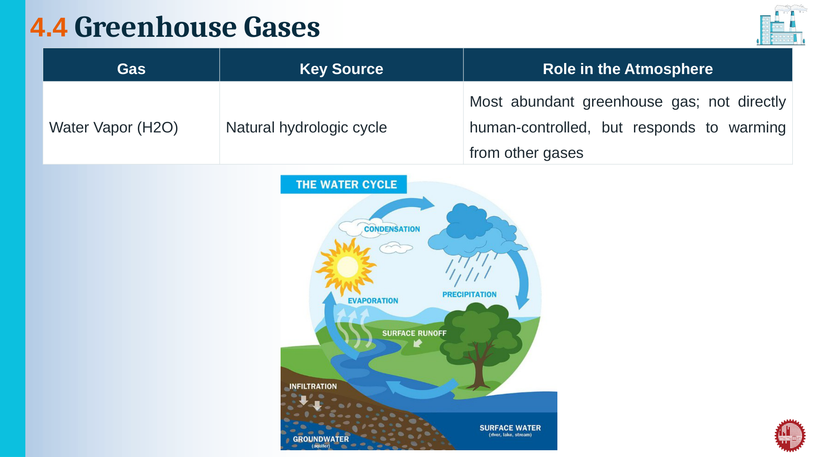
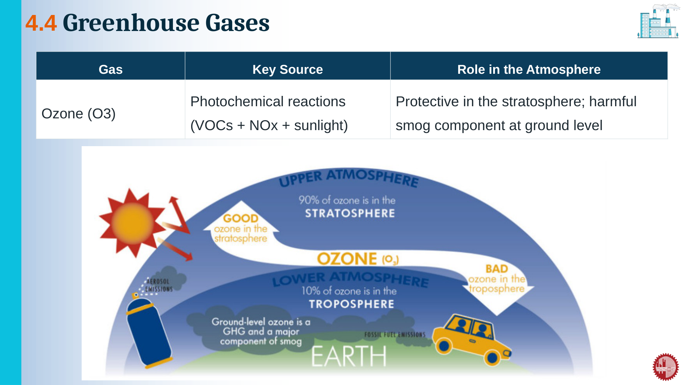
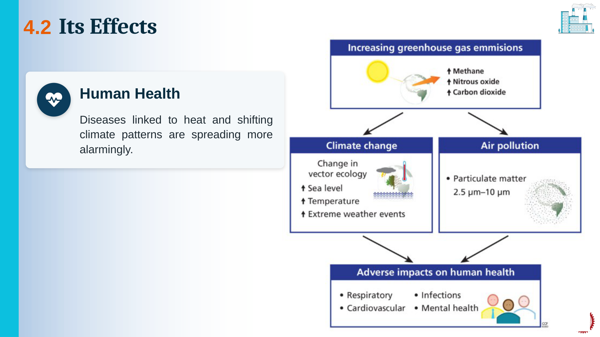

The Kyoto Protocol (1997) regulates six greenhouse gases:
| # | Gas | Symbol | GWP (100-yr) | Lifetime | Main Sources |
|---|---|---|---|---|---|
| 1 | Carbon dioxide | CO₂ | 1 (reference) | 300–1000 yr | Fossil fuel combustion, deforestation, cement |
| 2 | Methane | CH₄ | 28–36 | 12 years | Cattle (enteric fermentation), rice paddies, landfills, natural gas leaks |
| 3 | Nitrous oxide | N₂O | 265–298 | 121 years | Agriculture (N fertilizers), wastewater, combustion |
| 4 | Sulfur hexafluoride | SF₆ | 23,500 | 3,200 yr | Electrical equipment (circuit breakers), semiconductor industry |
| 5 | HFCs (Hydrofluorocarbons) | HFCs | 12–14,800 | Varies | Refrigeration, air conditioning (CFC replacements) |
| 6 | PFCs (Perfluorocarbons) | PFCs | 7,390–12,200 | 2,600–50,000 yr | Aluminum smelting, semiconductor industry |

Water vapor — most abundant natural GHG and positive feedback amplifier

Tropospheric ozone — GHG and air pollutant, not controlled under Kyoto
| Gas | % Contribution | Trend |
|---|---|---|
| CO₂ | ~65% | Rising (420 ppm, +50% since pre-industrial) |
| CH₄ | ~17% | Rising (rising from agriculture, gas fields) |
| N₂O | ~6% | Rising (N-fertilizer use) |
| HFCs/SF₆/PFCs | ~2% | Rising (but Kigali Amendment 2016 targets HFCs) |
| Other | ~10% | — |

Summary diagram of global warming effects — sea level, weather, ecosystem, food/water, health
| Agreement | Year | Key Feature |
|---|---|---|
| Rio Earth Summit | 1992 | Established UNFCCC framework; principle of "common but differentiated responsibilities" |
| Kyoto Protocol | 1997 | Binding targets for Annex I (developed) countries; 5.2% below 1990 levels by 2008–2012 |
| Doha Amendment | 2012 | Extended Kyoto to 2020 second commitment period |
| Paris Agreement | 2015 | All countries submit NDCs; limit warming to <2°C, pursue 1.5°C |
The Greenhouse Effect Mechanism:
Enhanced Greenhouse Effect → Global Warming: Human activities (fossil fuel combustion, deforestation, agriculture, industry) have increased atmospheric GHG concentrations significantly — CO₂ has risen from 280 ppm pre-industrial to 420+ ppm today. This "thicker blanket" traps more outgoing IR radiation, causing Earth's average temperature to rise — global warming (+1.1°C since pre-industrial). This drives climate change: sea level rise, extreme weather, ecosystem disruption, and food/water security threats.
The six greenhouse gases regulated under Kyoto Protocol (1997):
Highest GWP: SF₆ (Sulfur hexafluoride) at 23,500. However, CO₂ causes the most warming overall due to the enormous volumes emitted.